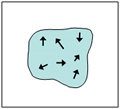

No external field. Rock sample has zero net field.
Magnetic domains are oriented randomly.
If an external field
H
exists, magnetic domains will align to it.
Net effect of all aligned fields causes rock sample to have a NON-zero field.